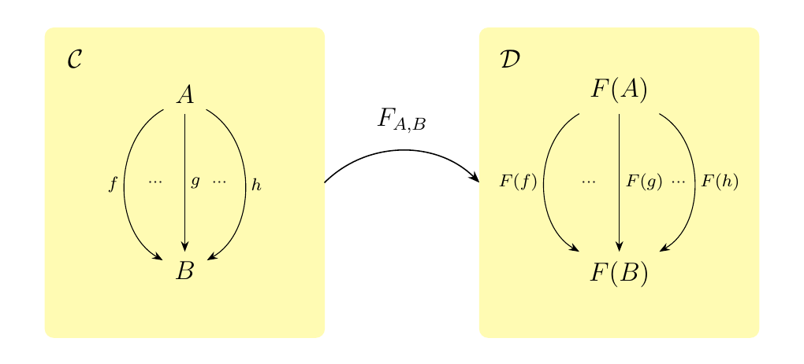

1.8. Forgetful, Full and Faithful Functors.
Like functions, functors can be composed to form new functors.
If \(\mathcal{A}, \mathcal{B}\) and \(\mathcal{C}\) are categories where
are functors, then we can define the composite functor \(G \circ F: \mathcal{A} \to \mathcal{C}\) where
We've now reached something quite important. We have the notion of a category, as well as the notion of a functor which acts as a map between categories. Moreover, every category \(\cc\) is equipped with an identity functor \(1_{\cc}: \cc \to \cc\), functor composition is associative, and so we may form the category of categories CAT where
- Objects. All categories (large and small)
- Morphisms. All functors between such categories.
If we instead restrict our objects to all small categories,
we obtain the category \(\cat\), which is usually what we'll work with.
\textcolor{NavyBlue}{Overall, what we see is that
functors are the rightful "morphisms" between categories.}
Since functors are, in an abstract sense, morphisms, and we know that for general morphisms, there exists a concept of an isomorphism, we can directly apply such a notion to define what an isomorphic functor is.
Let \(\cc\) and \(\dd\) be two categories. Then a functor \(F: \cc \to \dd\) is said to be a isomorphism if it is bijective on both objects and arrows. \
Equivalently, \(F\) is an isomorphic functor if and only if there exists a functor \(G : \dd \to \cc\) such that \(F \circ G\) is the identity on \(\cc\) and \(G \circ F\) is the identity on \(\dd\) (both in terms of objects and arrows).
\textcolor{MidnightBlue}{Sometimes when a functor maps objects from one category to another, the underlying structure of the objects in the first category gets lost. Or perhaps a binary operation acting on the elements in the first set of objects becomes lost. For this, we have a special name.}
Let \(\cc\) and \(\dd\) be categories and suppose \(F: \cc \to \dd\) is a functor. Then \(F\) is said to be forgetful whenever \(F\) does not preserve the axioms and structure present in the objects of \(\cc\) (whether it be algebraic or some kind of ordering).
The above definition isn't precise, although it is a useful notion to have. It will eventually become precise, but we'll comment more on that after a few examples.
Consider a group \((G, \cdot)\) with \(\cdot\) the binary operation. In some sense, groups are simply sets with added structure, while group homomorphisms are simply functions that respect group structure. Hence we can create a map between \(\grp\) and \(\Set\) that forgets this structure:
We can demonstrate that this process is functorial. Observe that if \(1_G: (G, \cdot) \to (G, \cdot)\) is the identity group homomorphism, then one can readily note that \(1_G(g) = g\) for all \(g \in G\), so that it is also an identity function on the underlying set \(G\). Therefore, \(F(1_G) = 1_{F(G)}\)
Next, if \(\phi: G \to H\) and \(\psi: H \to K\) are group homomorphisms,
then \(F(\psi \circ \phi)\) is the underlying function \(\psi \circ \phi: G \to K\).
Note however that for each \(g \in G\),
Hence, we see that we have a forgetful functor \(F: \grp \to \Set\) which leaves behind group operations, and moreover regards every group homomorphism as a function.
Let \((R, +, \cdot)\) be a ring. Recall that \((R, +)\) (alone with its addition) is an abelian group. Hence we can forget the structure of \(\cdot: R\times R \to R\) and, in a forgetful sense, treat every ring as an abelian group.
This then defines a forgetful functor \(F: **Rng** \to \ab\) which simply maps a ring to its abelian group. This works on the morphisms, since every ring homomorphism \(\phi: (R, +, \cdot) \to (S, +, \cdot)\) is a group homomorphism \(\phi: (R, +) \to (S, +)\) on the abelian groups.
Consider the category \(\top\). Each object in top is a pair \((X, \tau)\) where \(\tau\) is a topology on \(X\). Moreover, continuous functions are simply functions. This forgetful process is also functorial:
This then gives us the forgetful functor \(F: \top \to \Set\).
Some things need to be said about a forgetful functors. You might have noticed that our definition of a forgetful functor was not at all mathematically rigorous. This is because to define forgetful functors we have two main options:
- *1.* Use very deep set theory and logic to characterize the data of a category; then define forgetfulness as forgetting some of the data.
- *2.* Define a forgetful functor to be the left adjoint of a free functor \(F: \cc \to \dd\) (usually, \(\cc = \Set\))
Option 1. sounds like a pain, and I don't know any logic. I'm sure the reader is probably not interested in going on that kind of a ride anyways. Option 2. is not possible right now, but it will be once we learn about adjunctions.
Thus, using the tools we have right now, we cannot create a rigorous mathematical definition of a forgetful functor. This does not mean what we're doing is nonsense; it just means we're being sloppy in the interest of pedagogy. Once we learn about adjunctions things will make more sense, so the reader is urged to not worry too much about the rigor of a forgetful functor.
The sloppiness of our work regarding forgetful functors (i.e., us non-rigorously being like "Hey! See this piece of data? Let's throw it away!") might nevertheless be of some discomfort for the pedantic reader. This is because we cannot rigorously demonstrate what a forgetful functor is at this point; hence a reader interested in true understanding won't be able to fully do so at this point. Sometimes, however, understanding how something works is aided by understanding when something doesn't work. Hence to comfort the pedantic reader, we introduce an example where one might intuitively think such a forgetful functor exists, but it in fact does not.
Recall that the category hTop has objects as topological spaces and morphisms as homotopy classes between topological spaces. One might prematurely believe that there is a forgetful functor \(**hTop** \to \Set\), but that is not possible.
In trying to do so, we naturally associate topological spaces \((X, \tau)\) with its underlying set \(X\). On morphisms, it's trickier. Suppose \([f: X \to Y]\) is a homotopy equivalence class with \(f: X \to Y\) as the continuous function representing the class. Choose any \(f': X \to Y \in [f]\); we may very well choose \(f\) itself in which case \(f' = f\), and set \(F(f') = f'\), where \(f' \in \Set\) is regarded as a function.
This breaks when we encounter composition. Suppose \(f: X \to Y\) and \(g: Y \to Z\) are continuous functions. Let \(F([f]) =f'\), \(G([g]) = g'\), and \(F([g \circ f]) = (g \circ f)'\) where \(f', g',\) and \((g\circ f)\) are any elements of \([f], [g], [g' \circ f ']\) respectively. Then in no case can we always expect that
Hence this forgetful process cannot behave functorially.
Next, we introduce the notion of full and faithful functors. Towards that goal, consider a functor \(F: \cc \to \dd\) between locally small categories. Then for every pair of objects \(A, B \in \cc\), there is a function
where a morphism \(f:A \to B\) is sent to its image \(F(f): F(A) \to F(B)\) under the functor \(F\).

As we have a family of functions \(F_{A,B}\), we can ask:
when is this function surjective or injective? This motivates the following
definitions.
Let \(F: \cc\to \dd\) be a functor between locally small categories. We say \(F\) is
- Full if \(F_{A,B}\) is surjective
- Faithful if \(F_{A,B}\) is injective.
If \(F_{A,B}\) is an isomorphism, we say \(F\) is fully faithful.
Now we completely ignored the situation for when \(\cc, \dd\) are not locally small. This is out of pedagogical interest; if \(\cc, \dd\) are not locally small then we do not have the function described above. However, the concept of full and faithful can still be described; it's just not as nice of a description as before.
Let \(F: \cc \to \dd\) be a functor.
- Full if for all \(A, B\), every morphism \(g: F(A) \to F(B)\) in \(\dd\) is the image of some \(f: A \to B\) in \(\cc\)
- Faithful if for all \(A, B\), we have that if \(f_1, f_2: A \to B\) with \(F(f_1) = F(f_2)\), then\(f_1 = f_2\).
We then say \(F\) is a fully faithful if it is both full and faithful.
Consider the forgetful functor \(F: \top \to \Set\)
which we introduced earlier; topological spaces \((X, \tau)\) are
sent to their underlying sets \(X\) while continuous functions
\(f: (X, \tau) \to (Y, \tau')\) are regarded as functions
\(f: X \to Y\). This functor is faithful, since if two continuous functions
are equal as set maps, then they are equal as continuous functions.
The fact that this functor is faithful is simply due to the fact that the
extra data on a continuous function, i.e., its continuity, does not
interfere with its behavior of being a set function in
sending points \(X\) to \(Y\).
Note however that this function is clearly not full, because not every function \(g: X \to Y\) can be regarded as a continuous function between the topological spaces.
Let \((G, \cdot)\) and \((H, \cdot)\) be a group. Regard both groups as one object categories \(\cc\) and \(\dd\) with objects \(\textcolor{NavyBlue}{\bullet}\) and \(\textcolor{Orange}{\bullet}\) where we set
so that each \(g \in G\) is now a morphism \(g: \textcolor{NavyBlue}{\bullet} \to \textcolor{NavyBlue}{\bullet}\), and vice versa for every \(h \in G\), so that composition is given by the group structure. If we have a functor \(F: \cc \to \dd\) between these categories, then the function we introduced simply becomes a set function
However, the functorial properties allow this to extend to a group homomorphism from \(G\) to \(H\). Therefore, we see that if \(F: \cc \to \dd\) is full, it extends to a surjective group homomorphism. If it is faithful, it extends to an injective group homomorphism.
Consider the category of \(\grp\), and recall it has a forgetful functor \(F: \grp \to \Set\). This functor is actually fully faithful; to see this, consider two group homomorphisms \(\phi,\psi: (G, \cdot) \to (H, \cdot)\), and suppose that \(F(\phi) = F(\psi)\). Then this implies that \(F(\phi)(g) = F(\psi)(g)\) for each \(g \in G\). However, \(F(\phi)(g) = \phi(g)\) and vice versa for \(\psi\). Therefore, we have that \(\phi = \psi\), so that the forgetful functor \(F\) is a faithful functor.
The above example can be repeated for many familiar categories, which motivates the following definition.
A category \(\cc\) is said to be concrete if there is a faithful functor \(F: \cc \to \Set\).
Examples of concrete categories includ \(\grp\), \(\top\), \(R\mod\), and many others since these categories are, in some sense, built from \(\Set\). Their objects are sets, and their morphisms are functions with extra properties; nevertheless, at the end of the day the morphisms are still functions. Note in particular that these categories are not subcategories of \(\Set\), but they are still deeply related to this category in a way that the above definition illuminates.
We don't have the tools right now, but we will later show that every small category \(\cc\) is a concrete category.
{\large Exercises \vspace{0.5cm}}
- *1.* In this exercise, you'll demonstrate that the image of a functor is generally
not a category, but that full functors remedy the situation.
-
(i.) Let \(F: \cc \to \dd\). Define the image of \(F\) in \(\dd\) to consist of
- Objects. All \(F(A)\) with \(A \in \cc\)
- Morphisms. For any two objects \(F(A)\) and \(F(B)\), we have that
$$ \hom_{\dd}(F(A), F(B))={ F(f) \mid f: A \to B }. $$ * (ii.) Let \(F: \cc \to \dd\) be a full functor. Show that the image of \(\cc\) under \(F\) forms a full subcategory of \(\dd\). * (iii.) By (ii), it is sufficient for \(F\) to be full in order for the image to be a category. Is this condition necessary for the image to form a category? In other words, suppose the image of a functor \(F\) is a category. Is \(F\) full?
-